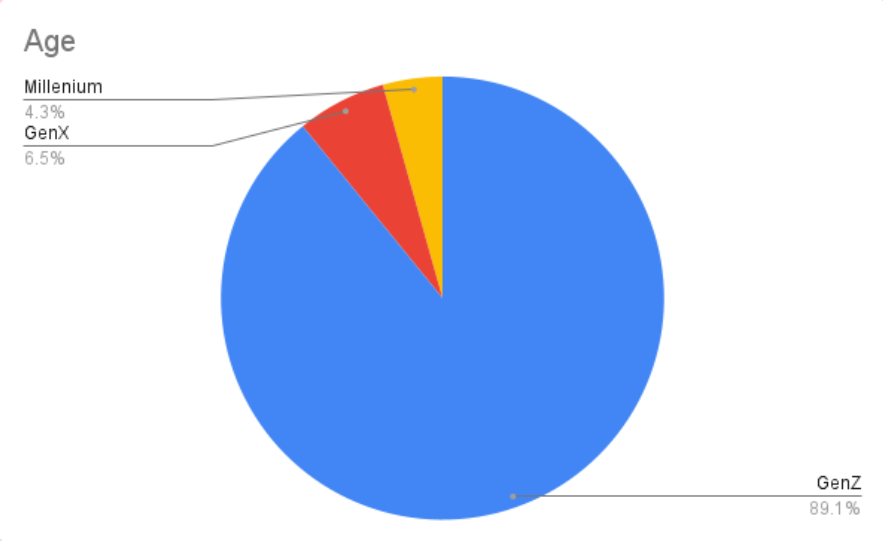
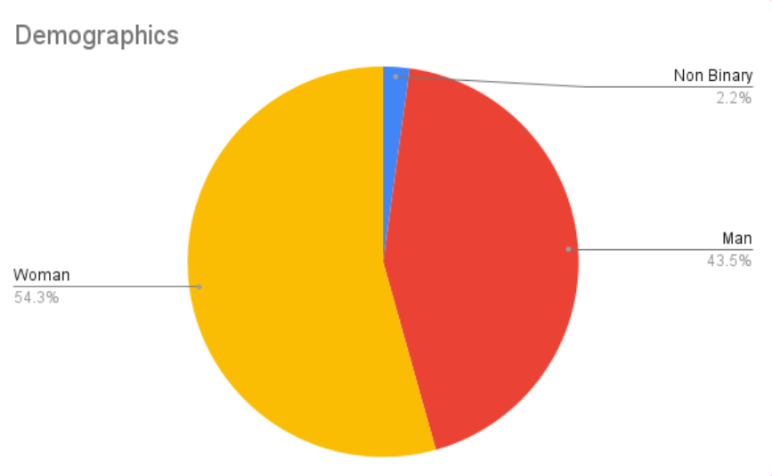
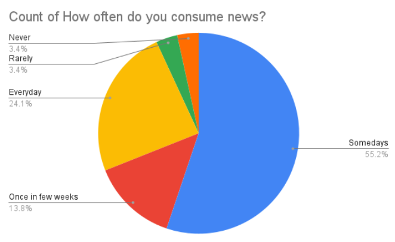
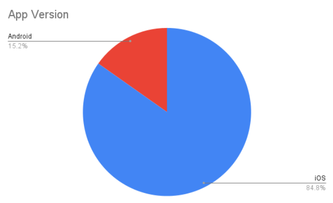

how i documented my UX research for my internship?
last fall (2024), i got a remote ux internship at shades and this is my journey <3

Shades News is social media/news app with an aim to make GenZ audience more aware about their source of information for news. According to my research, over 80% of my target audience (GenZ particularly) prefer social media as a means to get their news. However, it is easy to spread misinformation through apps like Tik Tok, Instagram, YouTube, etc. and they wanted to make young adults more aware about their news.
Through these 12 weeks, I had conducted 50+ user reviews with following goals in mind:
- App’s branding: Do you like the app’s personality for fonts, colors and animations?
- Content: How did they feel about the news? Do they like the variety or is there something particular they would have liked to know?
- Reusability: How likely are they to use the app again? And, what pushes them in that direction?
- Gamification: What did they feel about the game? Was there anything that stood out to them?
- Streaks: How did they feel about having streaks? Did they have any thoughts when using the prototype version of streaks?
Methods
During my first week of internship, I had to prepare a questionnaire and how would I get my user testers. Following is an excerpt of how I would get my testers for the app:
- Reach out to students in my classes and clubs (e.g., Political Science, Journalism) to gauge interest in news apps and ask them to try Shades.
- Speak with professors about visiting relevant club meetings (e.g., Criminal Justice Club, Model UN) to promote Shades and encourage members to complete a survey.
- Engage with friends’ mutual connections and people I meet in shared spaces (e.g., dining halls, study lounges) by discussing how Shades makes consuming news easier for Gen Z.
- Put up flyers on bulletin boards and around campus featuring a QR code linked to the app and survey for easy access.
- Post polls or short stories on my social media platforms (Instagram, Twitter) to identify those interested in trying out new news apps.
- Join and attend clubs like Model UN to build relationships with like-minded students who may be interested in a new way to consume news.
- Use email to send out personalized messages about Shades, potentially offering an incentive for survey completion (e.g., a raffle for gift cards or a small prize).
- Track progress and insights using Excel to stay organized and ensure a consistent outreach approach.
However, over the course of semester, these were my following tactics:
- Quantitative research: For this technique, I had made an excel sheet for all my responses from google forms where I asked my testers:
- Rank the app’s performance and intuitiveness on a scale of 1-5?
- How likely are they to reuse the app on a scale of 1-5?
- What mediums do they prefer for news? (newsletters/websites/news apps/social media)
-
Qualitative research: Most of my qualitative work happened through user-interviews and focus groups.
- I had a set of questionnaires from my first week that evolved as I interviewed more people to get their bias free opinions.
- Experimented with focus groups as I would let a group of friends try out the app to see what their thoughts are.
- Behavioural research: A lot of my interviews were recorded to allow me to make notes later, this allowed me to pick up cues like “ah”, “oh, that’s cool”, etc. that I would have missed if I took notes in real time.
However, later I realized that having a screen recording would probably be the best. It allowed me to see at what moments my user was reacting to the app as I didn’t have to guess those moments.
Findings
   Most users liked the app and could see themselves using occasionally but it created a weird delimma as those who don't use social media did not feel the app was for them and for those for who do use social media felt that the app was not impressive enough for them to use it everyday.
Some of the user suggestions are listed below:
- “Less visually busy, sources more visible, I would like to know about the app's integrity and what it does to fact check/be honest about its bias.”
- “Maybe more customization, such as different background color themes. also whenever I refreshed, it wasn’t giving me new stories at the top.”
- “The Icons and the amount of screen space that is being clutter with unnecessary things could be considered. There are UI components that seem unnecessary and can be made simpler.”
Feel free to check out my presentation here :)